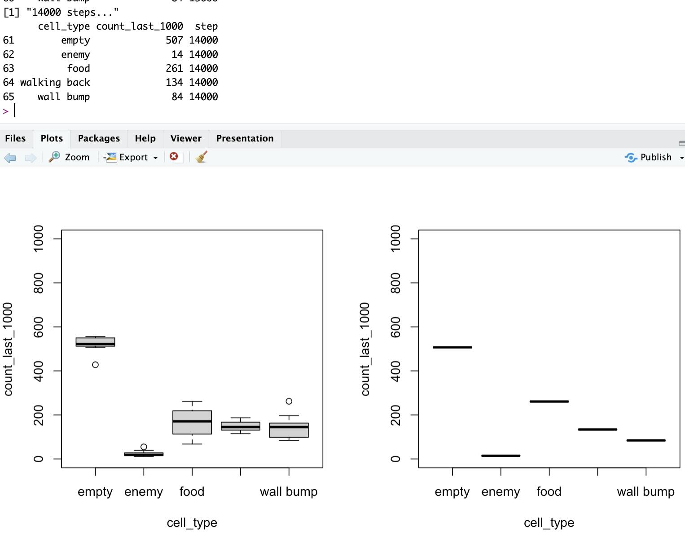
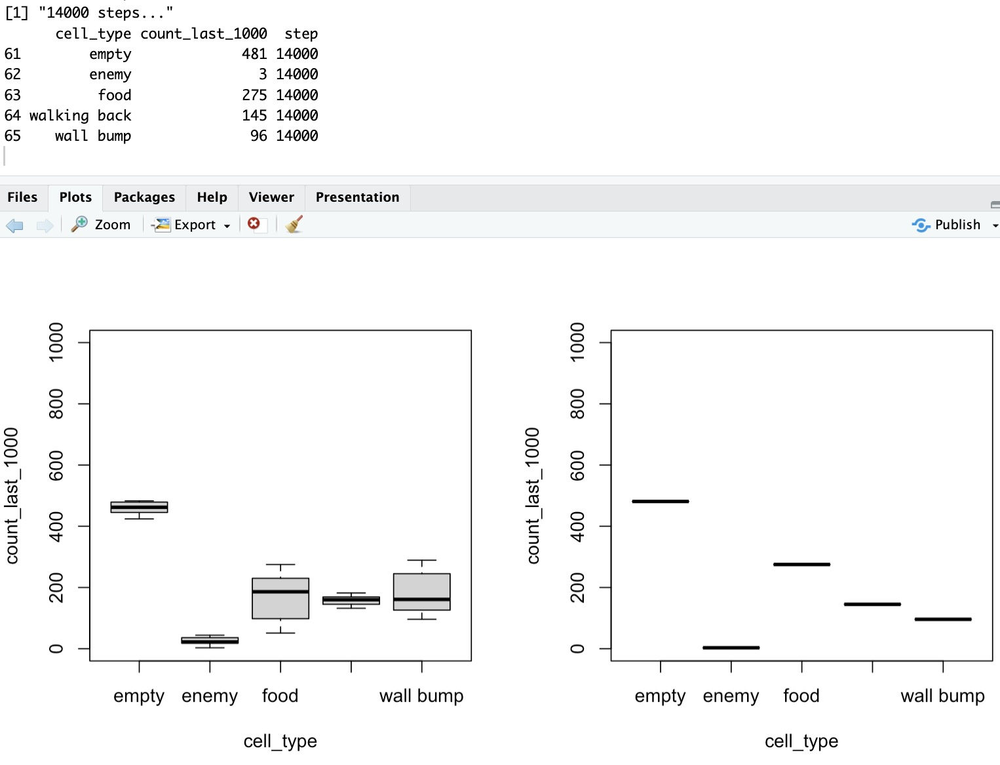

I bought the book and used it
Using theory is proving useful indeed
Recently, I had “broken” my Reinforcement Learning implementation, in the sense that it would learn at first, and then it would get worse with more experience, instead of better.
With so many hyper-parameters to consider, I knew I had touched too many levers while trying to improve…
One key thing was my exploration prevalence. But I didn’t know that. I start training with high exploration (1 step in each 2). That’s meant to expose to the maximum possible situations at first. In the smaller worlds, that should cover more environment states, and so reward of different actions would be learnt early on. That was the idea behind my choice, anyway. It kind of made sense…
But then I knew of course that too much exploration would mean… Worse rewards.
That was correct, but a few more things were happening… The short list here:
my reward update function per classifier of the LCS was not great
and my choosing of best classifiers (influencing the algorithm step of going from match-set to action-set) was in fact all wrong too 🤦♂️
Theory to the rescue!
I only have gone through chapter 1 & 2 and already…
I bought the “bible of RL” (see Resources below) and recently received it at home. And it’s already making a difference! (Actually, having a physical copy was a great choice for me.)
I have now corrected the above issues, but inspired by only the first two chapters (the second one really, as I had glanced at the first one earlier…) I was able to implement 2 different reward-update functions that (along with exploration pressure increase) made all the difference.
Plus I now have initialized my rewards with a high positive value to foment more exploration at the earlier stages.
Results
To emit a judgement on the quality of my implementation, along with the right mix of hyper-parameters (then again, I’m not saying they’re optimal, I’m saying they’re OK)…
I had to sit down and choose what would demonstrate “learning” in my small scenario.
So I kept things very simple:
1 agent
4 actions corresponding to the 4 directions (horizontal and vertical only)
At all steps, the agent can see empty cells, wall cells, food cells, enemy cells and where it came from (allocentric perception forced me to do that), 1 cell in any direction (including diagonals).
In a simple scenario, 5x5 world, there are at any point: 16 wall cells, 5 empty cells, 1 food, 1 enemy, 1 walk-back.

Given that, I think this demonstrates how good the agent is after some training:

The above is using a “sample average” reward update function, whereby the reward contribution gets smaller and smaller with time.
This learns the best exploitation policy in certain scenarios where there is a unique perfect policy. However, in our case, given the limited agent perception, one could consider that it would be best to keep learning over time.
That is because the “food” and the “enemy” positions change once the agent collides with them. Although in the longer run that is probably incorrect, there are many possible perceived states even in this very small scenario (and in spite of the LCS and its GA pressuring to learn of each scenario only the relevant part of the states…), we could think that with limited learning steps, an option that ensures the agent keeps learning in a non-stationary environment will be better off.
Well, so I implemented the equations with fixed alpha (set to 0.1).
Note that in all the above, I keep starting training with one exploratory step in each 2, then reduce exploration every 2000 time-steps, until I get to 1 in 6. That forces exploration too, with more pressure at the beginning.
With the new rules this might be in fact unnecessary, I am aware, but I still haven’t tested with fixed exploration pressure (say always 1 in 6 in my example). It should work!
Anyhow, the results with fixed alpha are almost identical in my simple scenario:

What do the above screenshot say?
Well, we’ve seen there are:
More wall cells (16) than empty cells (5)
more empty cells (5) than enemy, food and “walk-back” cell (of which there is one)
And yet, after some training, the agent averages, over 1000 most recent steps taken:
275 food eaten (most rewarding)
3 enemy encounters (most penalized)
less than 100 wall bumps (heavily penalized)
about 150 walk-backs (slightly penalized)
and well, quite a bit of walking around in empty cells
I haven’t done the math, but in some of the perceived states:
Corner: 5 walls/8 total cells. There are 4 corners. 62.5%
Side: 3 walls/8. 37.5%
The above account for 8 of 9 possible agent positions (exceptuating center cell)
And yet, only 10% of the time the agent bumps into a wall on average (and that’s with a 17% chance of exploratory move!).
As the agent has very limited state perception, I believe this is proof right there that it has indeed learnt something.
I’d have to run many more numbers (4 moves possible, 9 locations, 5 different possible cells-status per cell, in different combinations… I’m not doing that until someone asks me to do a PhD on the topic 😁)
Similar numbers could demonstrate that there are lots of food-related actions compared to white cell prevalence…
And indeed, supposing the identical probability of encountering food or enemy at any stage, the fact that our agent has chosen the right action when faced with both possibilities, choosing food 275 times for only 3 times the enemy (again, exploration step 1 in 6 in all described statistics above), well…
I’m sold.
Conclusions
I’m very happy about it all. The Reinforcement Learning example I chose is working nicely! And it makes sense, based on the little theory I have studied thus far.
(Note: I shall actually post a short entry on real-world application of data mining with my LCS implementation. Any day now, it has happened already…).
Resources
“Reinforcement Learning, An introduction.”, 2nd Ed. Bradford Books, by R. S. Sutton & A. G. Bardo.